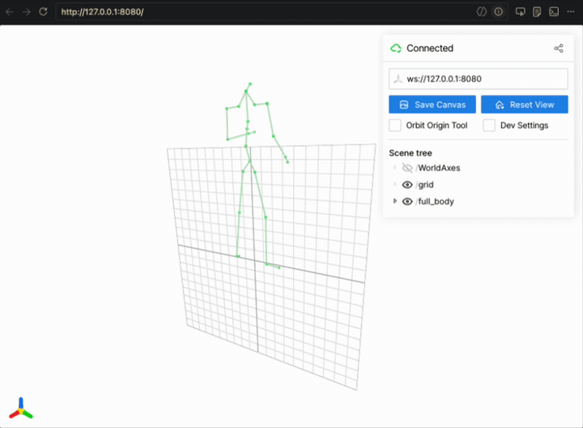

Body Tracking#
Isaac Teleop supports streaming full-body tracking data from an XR headset
through the CloudXR WebXR client to the teleop server. The server exposes the
body skeleton to applications through the FullBodyTrackerPico tracker and
the OpenXR XR_BD_body_tracking extension.
Body tracking support currently targets the PICO 4 Ultra with PICO Motion Trackers. The rest of this guide covers PICO hardware setup and the BD skeleton format used on the server.
Note
Meta Quest 3/3S also expose body tracking to WebXR via inside-out body tracking (IOBT), and the CloudXR client will stream it. However the Quest skeleton is mapped to the PICO BD 24-joint layout in the current version, and accuracy is lower since there are no physical trackers. See Quest Body Tracking (Limited Support) for details.
Setting Up PICO Motion Trackers#
Full body tracking uses PICO Motion Trackers paired with a PICO 4 Ultra headset. Make sure the PICO browser is updated to a version that supports body tracking. The following configurations are supported:
5 trackers: best tracking quality across all 24 joints. Two wear modes are available: 2 ankles + 2 wrists + 1 waist, or 2 ankles + 2 thighs + 1 waist.
3 trackers: 2 ankles + 1 waist. Upper-body joints are estimated from the headset and controllers; lower-body tracking remains accurate.
2 trackers: 2 ankles only. Provides lower-body tracking with upper-body estimation. Least hardware, but reduced accuracy for waist and sitting/lying postures.
Instructions#
Tap the clock / Wi-Fi / battery icon in the lower-right corner of the PICO menu. A picture of the headset appears; above it is a small circular button with a wristband-and-tracker icon. If the button is missing, open the Motion Tracker app directly.
Select a wear mode that matches the number of trackers you have and best fits your use case.
Click the Pair button.
On each tracker, press and hold the top button until the lights start flashing (pairing mode).
Strap the trackers on following the placement shown in the app for your chosen wear mode. Scrunch down any baggy clothing so the trackers are visible to the headset cameras.
Click Calibrate and follow the instructions in the Motion Tracker app.
Before each session, confirm all trackers are powered on, paired, and calibrated.
How Full Body Tracking Works#
Skeleton profile#
Body tracking data uses the XR_BD_body_tracking OpenXR extension profile defined by ByteDance (BD). This is the only body tracking profile currently supported by the CloudXR runtime.
When the CloudXR WebXR client starts a session, it requests the body-tracking
feature from the browser. Each frame, the CloudXR client library reads the body
joint data provided by the PICO runtime and streams it to the server. No
additional configuration is needed in the WebXR client; body tracking is
enabled automatically when the device supports it.
Joint skeleton (24 joints)#
The BD profile defines a 24-joint skeleton. Each joint provides a position
(vec3 in meters), an orientation (quaternion), and a per-joint is_valid flag
indicating whether the tracker successfully resolved that joint in the current
frame.
Index |
Joint |
Parent |
|---|---|---|
0 |
Pelvis |
(root) |
1 |
Left Hip |
Pelvis |
2 |
Right Hip |
Pelvis |
3 |
Spine 1 |
Pelvis |
4 |
Left Knee |
Left Hip |
5 |
Right Knee |
Right Hip |
6 |
Spine 2 |
Spine 1 |
7 |
Left Ankle |
Left Knee |
8 |
Right Ankle |
Right Knee |
9 |
Spine 3 |
Spine 2 |
10 |
Left Foot |
Left Ankle |
11 |
Right Foot |
Right Ankle |
12 |
Neck |
Spine 3 |
13 |
Left Collar |
Spine 3 |
14 |
Right Collar |
Spine 3 |
15 |
Head |
Neck |
16 |
Left Shoulder |
Left Collar |
17 |
Right Shoulder |
Right Collar |
18 |
Left Elbow |
Left Shoulder |
19 |
Right Elbow |
Right Shoulder |
20 |
Left Wrist |
Left Elbow |
21 |
Right Wrist |
Right Elbow |
22 |
Left Hand |
Left Wrist |
23 |
Right Hand |
Right Wrist |
Server-side access#
On the server, body tracking data is consumed through the
FullBodyTrackerPico tracker (see Device Trackers for the full tracker
reference). The tracker exposes a get_body_pose() method that returns the
24-joint skeleton each frame (or null when body tracking is not available).
Joint data follows the FullBodyPosePico FlatBuffers schema defined in
src/core/schema/fbs/full_body.fbs.
The all_joint_poses_tracked quality flag indicates whether every joint was
successfully tracked in the current frame. When it is false, consult individual
joint is_valid flags to determine which joints have valid poses.
Troubleshooting#
No body tracking data arrives on the server. Verify all PICO motion trackers are paired, powered on, and calibrated. Confirm the PICO browser is up to date.
Some joints report
is_valid: false. The PICO runtime may temporarily lose tracking for individual joints during fast movement or partial occlusion. These joints will recover automatically once tracking is re-acquired.
Recording and Replay#
Full body sessions can be captured to MCAP and replayed offline through the
same retargeting pipeline — no headset required during replay. See
MCAP Recording & Replay for the recording / replay API and
the record_full_body.py / replay_full_body.py example.

replay_full_body.py visualizing a recorded BD 24-joint skeleton in viser.#
Quest Body Tracking (Limited Support)#
Meta Quest headsets expose inside-out body tracking (IOBT) to WebXR sessions.
The CloudXR WebXR client will stream this data when the Quest browser grants the
body-tracking feature.
However, in the current version the Quest IOBT skeleton is mapped to the PICO BD
24-joint layout before being sent to the server. This means the server always
receives data in the XR_BD_body_tracking joint format regardless of the
source headset.
Note
Quest body tracking does not require external trackers. It uses the headset’s built-in cameras. Tracking quality may differ from the tracker-based PICO solution, particularly for lower-body joints.